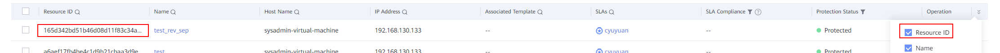

Symptom
The copy directory fails to be expanded during file-level restoration using a NAS share or fileset aggregation copy.
Possible Causes
The sqlite aggregation file is damaged.
Troubleshooting
- View the corresponding resource ID.

- View the logical port, search for the data warehouse where the resource is located, and share the resource over NFS.
- Log in to DeviceManager.
- For some models of this product, perform the following operations:
- Choose System > Infrastructure > Cluster Management.
- On the Backup Clusters tab page, click a node name under the Local Cluster Nodes area.
- On the displayed Node Details page, click Open the device management platform to go to DeviceManager.
- For some models of this product, log in to DeviceManager of the backup storage device by referring to Logging In to DeviceManager.
- For some models of this product, perform the following operations:
- View the logical ports.
Choose Services > Network > Logical Port to view available logical ports. Select a logical port that supports the NFS data protocol and corresponds to IOM0, and record the IP address of the port (for example, 192.168.101.67).

- Search for the data warehouse where the resource is located and share the resource over NFS.
- Log in to DeviceManager.
- Mount the file system.
- Find a host that can access the logical port.
- Log in to the host and run the following command to mount the file system:
mount -t nfs -o vers=3 $IP:$share_path $local_path
- Go to the directory where the damaged sqlite file resides.
- Go to the sqlite file directory.
cd $local_path/source_policy_{Resource ID}_Context_Global_MD/{copy ID}/sqlite - Go to the directory that fails to be expanded.
cd ./$failure_path
- Go to the sqlite file directory.
- Repair the damaged sqlite file copymetadata.sqlite.
- Export the SQL file.
sqlite3 copymetadata.sqlite .dump > newdb.sql
- Change ROLLBACK in the last line of the newdb.sql file to COMMIT.
sed -i '$ s/ROLLBACK/COMMIT/g' newdb.sql
- Import the SQL file.
sqlite3 new.sqlite < newdb.sql
- Check whether the newly generated sqlite file is valid. If ok is displayed in the command output, the sqlite file is normal.
sqlite3 new.sqlite sqlite>pragma integrity_check;
- Replace the original file with the repaired sqlite file.
mv new.sqlite copymetadata.sqlite
- Export the SQL file.


Suggestions
Damaged information will be lost in the repaired sqlite file. So, some file information may be lost. You are advised to use an undamaged copy of the sqlite file for restoration.
Reference
None